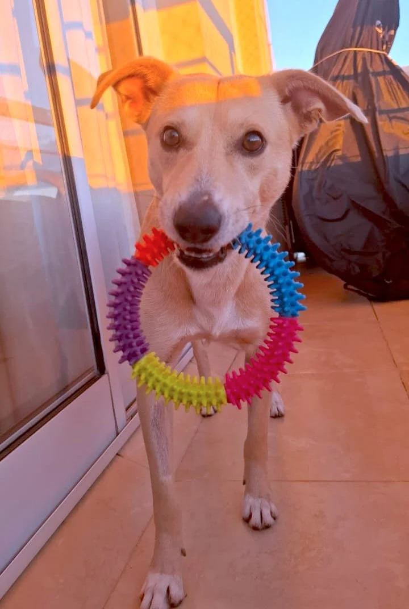
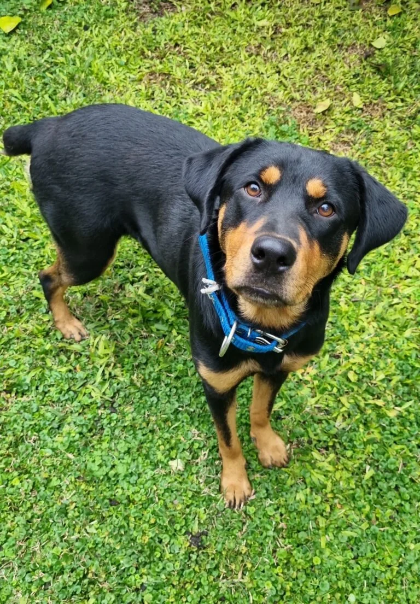
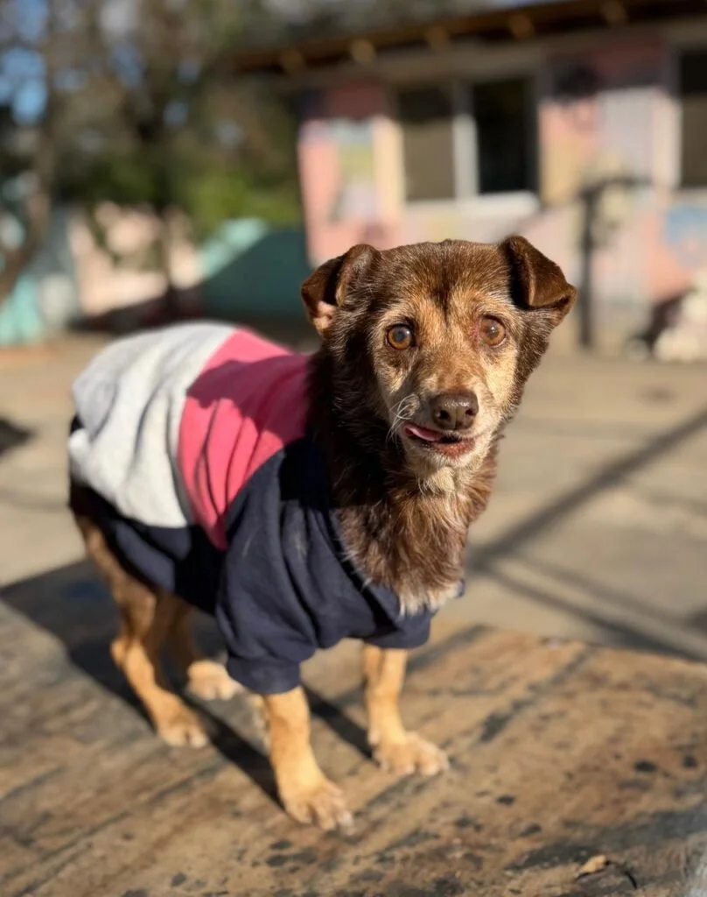
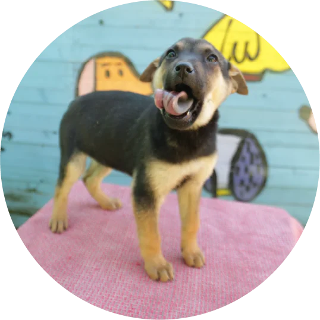
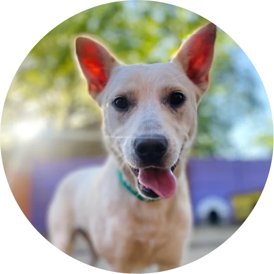
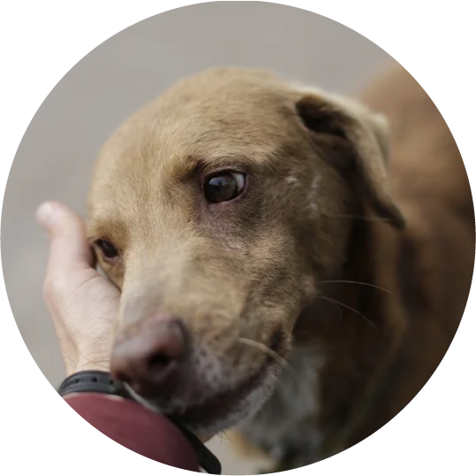
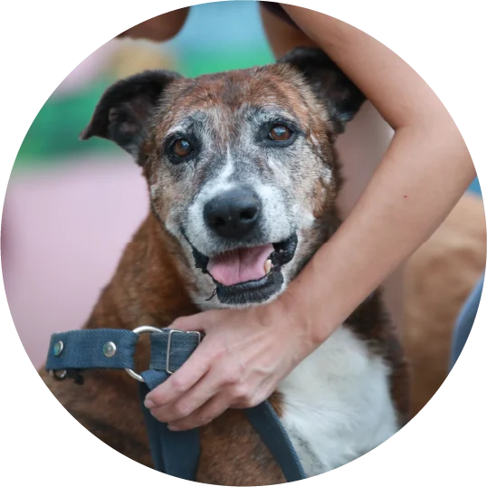

Somos un refugio dedicado al rescate, recuperación y adopción de perros y gatos en situación de vulnerabilidad. Nuestra misión es la de rescatar animales en situación de calle, recuperarlos y darles la oportunidad de encontrar una familia. Desde 2015, hemos trabajado incansablemente para demostrar que cada vida merece una segunda oportunidad.
Desde 2015 rescatamos y cuidamos animales en situacion de abandono.



| Cachorro | Joven | Adulto | Abuelo |
|---|---|---|---|
| Menos de 1 año | 1-5 años | 5-9 años | +10 años |
| Es adorable y es gratificante ver su crecimiento hasta la edad adulta pero demanda tiempo y esfuerzo. | Es juguetón pero más adulto | No genera problemas por quedarse solo durante períodos razonables de tiempo y son grandes compañeros | Nos brinda la ventaja de disponer de mucho tiempo para nosotros. Suelen ser tranquilos y sedentarios. |
| Requiere alimentación frecuente, hace sus necesidades muchas veces por día, rompe objetos y acostumbra a llorar en las noches si se queda solo. | Son más hábiles para aprender y adaptarse. Come dos veces al día. | Se adaptan fácilmente a un nuevo entorno familiar. | Aunque el período de compañía compartida posiblemente sea más breve, puedes ofrecerles durante los años que les quedan una vida digna y agradable. |
| La paciencia y la educación son esenciales durante su primer año y no se puede garantizar su tamaño final. | Ya tiene el tamaño definitivo, no cambiará de aspecto, ya tiene rasgos de personalidad desarrollados y estará esterilizado. | - | Estos abuelos, que esperaron durante mucho tiempo un hogar, muestran una gratitud sincera y son pura entrega. |
|  |
 |
 |
 |